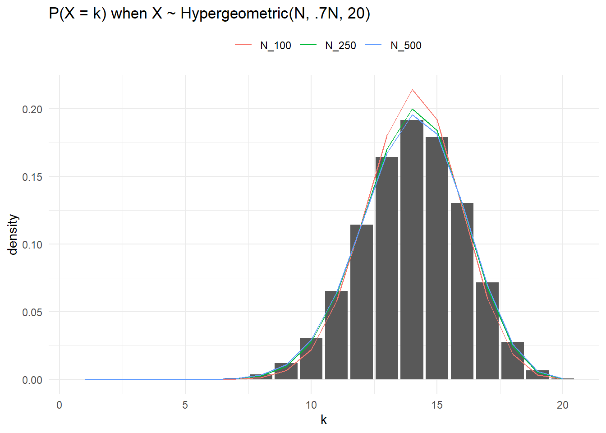
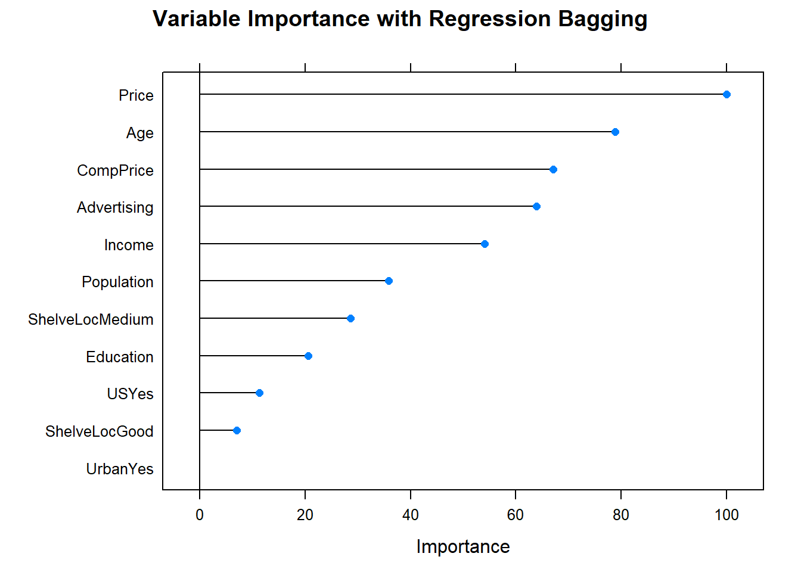
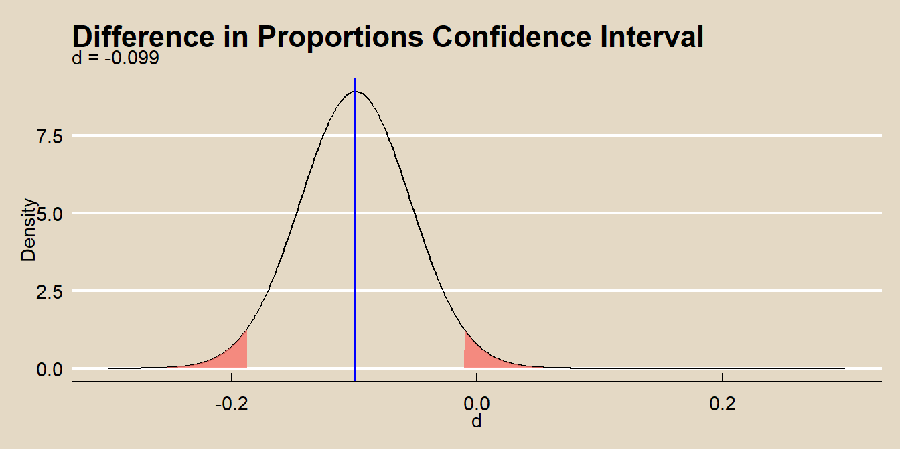
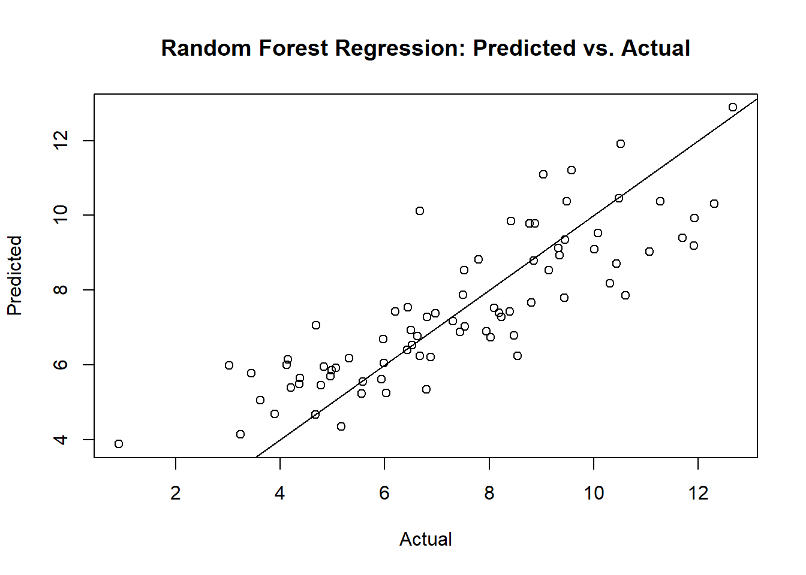
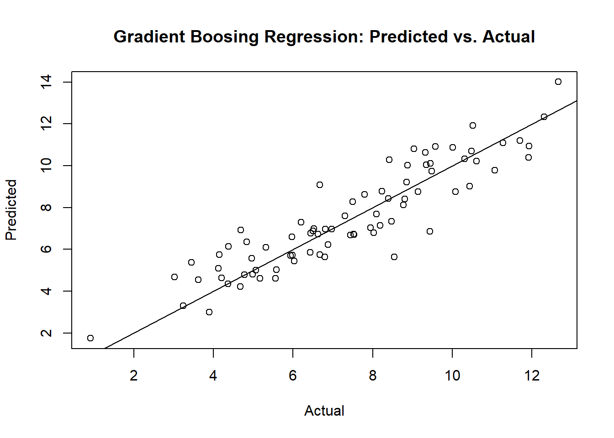

8.4 Random Forests
Random forests improve bagged trees by way of a small tweak that de-correlates the trees. As in bagging, the algorithm builds a number of decision trees on bootstrapped training samples. But when building these decision trees, each time a split in a tree is considered, a random sample of mtry predictors is chosen as split candidates from the full set of p predictors. A fresh sample of mtry predictors is taken at each split. Typically \(mtry \sim \sqrt{b}\). Bagged trees are thus a special case of random forests where mtry = p.
8.4.0.1 Bagging Classification Example
Again using the OJ data set to predict Purchase, this time I’ll use the bagging method by specifying method = "treebag". I’ll use tuneLength = 5 and not worry about tuneGrid anymore. Caret has no hyperparameters to tune with this model.
oj.bag = train(Purchase ~ .,
data = oj_train,
method = "treebag", # for bagging
tuneLength = 5, # choose up to 5 combinations of tuning parameters
metric = "ROC", # evaluate hyperparamter combinations with ROC
trControl = trainControl(
method = "cv", # k-fold cross validation
number = 10, # k=10 folds
savePredictions = "final", # save predictions for the optimal tuning parameters
classProbs = TRUE, # return class probabilities in addition to predicted values
summaryFunction = twoClassSummary # for binary response variable
)
)
oj.bag## Bagged CART
##
## 857 samples
## 17 predictor
## 2 classes: 'CH', 'MM'
##
## No pre-processing
## Resampling: Cross-Validated (10 fold)
## Summary of sample sizes: 771, 772, 771, 772, 770, 770, ...
## Resampling results:
##
## ROC Sens Spec
## 0.8531872 0.8241292 0.7364528#plot(oj.bag$)
oj.pred <- predict(oj.bag, oj_test, type = "raw")
plot(oj_test$Purchase, oj.pred,
main = "Bagging Classification: Predicted vs. Actual",
xlab = "Actual",
ylab = "Predicted")
## Confusion Matrix and Statistics
##
## Reference
## Prediction CH MM
## CH 108 18
## MM 22 65
##
## Accuracy : 0.8122
## 95% CI : (0.7532, 0.8623)
## No Information Rate : 0.6103
## P-Value [Acc > NIR] : 1.758e-10
##
## Kappa : 0.6086
##
## Mcnemar's Test P-Value : 0.6353
##
## Sensitivity : 0.8308
## Specificity : 0.7831
## Pos Pred Value : 0.8571
## Neg Pred Value : 0.7471
## Prevalence : 0.6103
## Detection Rate : 0.5070
## Detection Prevalence : 0.5915
## Balanced Accuracy : 0.8070
##
## 'Positive' Class : CH
## oj.bag.acc <- as.numeric(oj.conf$overall[1])
rm(oj.pred)
rm(oj.conf)
#plot(oj.bag$, oj.bag$finalModel$y)
plot(varImp(oj.bag), main="Variable Importance with Simple Classication")
8.4.0.2 Random Forest Classification Example
Now I’ll try it with the random forest method by specifying method = "ranger". I’ll stick with tuneLength = 5. Caret tunes three hyperparameters:
mtry: number of randomly selected predictors. Default is sqrt(p).splitrule: splitting rule. For classification, options are “gini” (default) and “extratrees”.min.node.size: minimal node size. Default is 1 for classification.
oj.frst = train(Purchase ~ .,
data = oj_train,
method = "ranger", # for random forest
tuneLength = 5, # choose up to 5 combinations of tuning parameters
metric = "ROC", # evaluate hyperparamter combinations with ROC
trControl = trainControl(
method = "cv", # k-fold cross validation
number = 10, # 10 folds
savePredictions = "final", # save predictions for the optimal tuning parameter1
classProbs = TRUE, # return class probabilities in addition to predicted values
summaryFunction = twoClassSummary # for binary response variable
)
)
oj.frst## Random Forest
##
## 857 samples
## 17 predictor
## 2 classes: 'CH', 'MM'
##
## No pre-processing
## Resampling: Cross-Validated (10 fold)
## Summary of sample sizes: 770, 772, 772, 771, 771, 771, ...
## Resampling results across tuning parameters:
##
## mtry splitrule ROC Sens Spec
## 2 gini 0.8670943 0.8720610 0.7004456
## 2 extratrees 0.8586046 0.8854499 0.6378788
## 5 gini 0.8693983 0.8548621 0.7213904
## 5 extratrees 0.8683829 0.8567126 0.6915330
## 9 gini 0.8685985 0.8433237 0.7364528
## 9 extratrees 0.8684591 0.8395138 0.6976827
## 13 gini 0.8667643 0.8414369 0.7422460
## 13 extratrees 0.8660050 0.8318578 0.7035651
## 17 gini 0.8608692 0.8357039 0.7272727
## 17 extratrees 0.8652581 0.8298621 0.7036542
##
## Tuning parameter 'min.node.size' was held constant at a value of 1
## ROC was used to select the optimal model using the largest value.
## The final values used for the model were mtry = 5, splitrule = gini
## and min.node.size = 1.
oj.pred <- predict(oj.frst, oj_test, type = "raw")
plot(oj_test$Purchase, oj.pred,
main = "Random Forest Classification: Predicted vs. Actual",
xlab = "Actual",
ylab = "Predicted")
## Confusion Matrix and Statistics
##
## Reference
## Prediction CH MM
## CH 110 17
## MM 20 66
##
## Accuracy : 0.8263
## 95% CI : (0.7686, 0.8746)
## No Information Rate : 0.6103
## P-Value [Acc > NIR] : 7.121e-12
##
## Kappa : 0.6372
##
## Mcnemar's Test P-Value : 0.7423
##
## Sensitivity : 0.8462
## Specificity : 0.7952
## Pos Pred Value : 0.8661
## Neg Pred Value : 0.7674
## Prevalence : 0.6103
## Detection Rate : 0.5164
## Detection Prevalence : 0.5962
## Balanced Accuracy : 0.8207
##
## 'Positive' Class : CH
## oj.frst.acc <- as.numeric(oj.conf$overall[1])
rm(oj.pred)
rm(oj.conf)
#plot(oj.bag$, oj.bag$finalModel$y)
#plot(varImp(oj.frst), main="Variable Importance with Simple Classication")The model algorithm explains “ROC was used to select the optimal model using the largest value. The final values used for the model were mtry = 9, splitrule = extratrees and min.node.size = 1.” You can see the results of tuning grid combinations in the associated plot of ROC AUC vs mtry grouped by splitting rule.
The bagging (accuracy = 0.80751) and random forest (accuracy = 0.81690) models faired pretty well, but the manual classification tree is still in first place. There’s still gradient boosting to investigate!
rbind(data.frame(model = "Manual Class", Accuracy = round(oj_model_1b_cm$overall["Accuracy"], 5)),
data.frame(model = "Class w/tuneLength", Accuracy = round(oj_model_2_cm$overall["Accuracy"], 5)),
data.frame(model = "Class w.tuneGrid", Accuracy = round(oj_model_3_cm$overall["Accuracy"], 5)),
data.frame(model = "Bagging", Accuracy = round(oj.bag.acc, 5)),
data.frame(model = "Random Forest", Accuracy = round(oj.frst.acc, 5))
) %>% arrange(desc(Accuracy))## model Accuracy
## 1 Manual Class 0.85915
## 2 Class w/tuneLength 0.84507
## 3 Class w.tuneGrid 0.84507
## 4 Random Forest 0.82629
## 5 Bagging 0.812218.4.0.3 Bagging Regression Example
Again using the Carseats data set to predict Sales, this time I’ll use the bagging method by specifying method = "treebag". I’ll use tuneLength = 5 and not worry about tuneGrid anymore. Caret has no hyperparameters to tune with this model.
carseats.bag = train(Sales ~ .,
data = carseats.train,
method = "treebag", # for bagging
tuneLength = 5, # choose up to 5 combinations of tuning parameters
metric = "RMSE", # evaluate hyperparamter combinations with RMSE
trControl = trainControl(
method = "cv", # k-fold cross validation
number = 10, # 10 folds
savePredictions = "final" # save predictions for the optimal tuning parameter1
)
)
carseats.bag## Bagged CART
##
## 321 samples
## 10 predictor
##
## No pre-processing
## Resampling: Cross-Validated (10 fold)
## Summary of sample sizes: 289, 289, 289, 289, 288, 289, ...
## Resampling results:
##
## RMSE Rsquared MAE
## 1.8259 0.6084048 1.45797#plot(carseats.bag$finalModel)
carseats.pred <- predict(carseats.bag, carseats.test, type = "raw")
plot(carseats.test$Sales, carseats.pred,
main = "Bagging Regression: Predicted vs. Actual",
xlab = "Actual",
ylab = "Predicted")
abline(0, 1)
## [1] 1.640551
8.4.0.4 Random Forest Regression Example
Now I’ll try it with the random forest method by specifying method = "ranger". I’ll stick with tuneLength = 5. Caret tunes three hyperparameters:
mtry: number of randomly selected predictorssplitrule: splitting rule. For regression, options are “variance” (default), “extratrees”, and “maxstat”.min.node.size: minimal node size
carseats.frst = train(Sales ~ .,
data = carseats.train,
method = "ranger", # for random forest
tuneLength = 5, # choose up to 5 combinations of tuning parameters
metric = "RMSE", # evaluate hyperparamter combinations with RMSE
trControl = trainControl(
method = "cv", # k-fold cross validation
number = 10, # 10 folds
savePredictions = "final" # save predictions for the optimal tuning parameter1
)
)
carseats.frst## Random Forest
##
## 321 samples
## 10 predictor
##
## No pre-processing
## Resampling: Cross-Validated (10 fold)
## Summary of sample sizes: 289, 289, 289, 289, 289, 288, ...
## Resampling results across tuning parameters:
##
## mtry splitrule RMSE Rsquared MAE
## 2 variance 1.911124 0.6696231 1.553611
## 2 extratrees 1.990792 0.6165449 1.612592
## 4 variance 1.713616 0.6932189 1.376055
## 4 extratrees 1.792080 0.6547149 1.430145
## 6 variance 1.639911 0.7070203 1.314703
## 6 extratrees 1.721126 0.6698249 1.366180
## 8 variance 1.640003 0.6983830 1.315744
## 8 extratrees 1.686077 0.6774676 1.335012
## 11 variance 1.626058 0.6971295 1.305904
## 11 extratrees 1.665444 0.6825631 1.320023
##
## Tuning parameter 'min.node.size' was held constant at a value of 5
## RMSE was used to select the optimal model using the smallest value.
## The final values used for the model were mtry = 11, splitrule =
## variance and min.node.size = 5.
carseats.pred <- predict(carseats.frst, carseats.test, type = "raw")
plot(carseats.test$Sales, carseats.pred,
main = "Random Forest Regression: Predicted vs. Actual",
xlab = "Actual",
ylab = "Predicted")
abline(0, 1)
## [1] 1.35362rm(carseats.pred)
#plot(varImp(carseats.frst), main="Variable Importance with Regression Random Forest")The model algorithm explains “RMSE was used to select the optimal model using the smallest value. The final values used for the model were mtry = 11, splitrule = variance and min.node.size = 5.” You can see the results of tuning grid combinations in the associated plot of ROC AUC vs mtry grouped by splitting rule.
The bagging and random forest models faired very well - they took over the first and second place!
rbind(data.frame(model = "Manual ANOVA", RMSE = round(carseats.anova.rmse, 5)),
data.frame(model = "ANOVA w/tuneLength", RMSE = round(carseats.anova.rmse2, 5)),
data.frame(model = "ANOVA w.tuneGrid", RMSE = round(carseats.anova.rmse3, 5)),
data.frame(model = "Bagging", RMSE = round(carseats.bag.rmse, 5)),
data.frame(model = "Random Forest", RMSE = round(carseats.frst.rmse, 5))
) %>% arrange(RMSE)## model RMSE
## 1 Random Forest 1.35362
## 2 Bagging 1.64055
## 3 ANOVA w.tuneGrid 1.66476
## 4 Manual ANOVA 2.20792
## 5 ANOVA w/tuneLength 2.20792